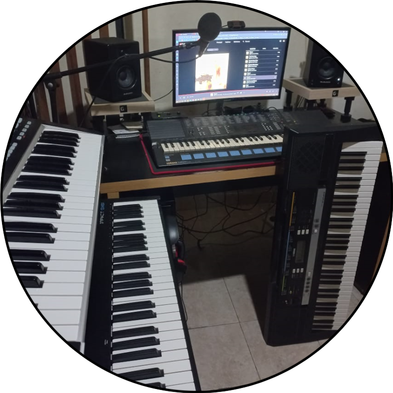
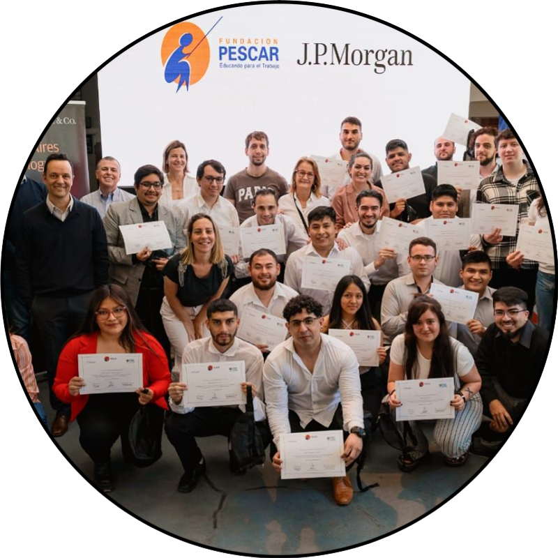

Te cuento un poco sobre mi...

Mi primer contacto con la programación fue en el año 2008, cuando tenia 16 años. Me tocó aprender C++ en la secundaria y sencillamente no me gustó. Muchísimos errores con los que lidiar, sintaxis que aprender, comandos que memorizar. Sin embargo, siempre me gustaron las computadoras y varias de las cosas que se podian hacer con ellas, sobre todo jugar 😂
Al terminar la secundaria, en 2010, solo pensaba en trabajar y ganar mi propio dinero. Comencé a trabajar en un kiosco de diarios en el que estaría varios años, aprendiendo valiosísimas habilidades como el trato con clientes, negociar con ellos y atender sus reclamos, entre otras cosas.

En 2014 di mis primeros pasos en lo que se convertiría en una de mis grandes pasiones: la música 🎼. Aprendí teclado por mi cuenta, poniendo a prueba mi capacidad para autoenseñarme. El camino sería gratificante, pero a pesar de eso, no estaría libre de sus momentos complicados. Sin darme cuenta, estaba desarrollando mi tolerancia a la frustración y la constancia, cualidades que me siguen ayudando en muchos ámbitos de mi vida.
Para el 2016 ya tenía conocimientos de reparación de PC de escritorio y, aunado al trato con clientes, me lanzaría como reparador freelance. En el 2020 comenzaría a estudiar mi primera carrera universitaria, Enfermeria. Pero no fue hasta 2021, a mitad de carrera, donde volvería a encontrarme con la programación a través de Python 🐍.Y allí es cuando se encendió la chispa. Quería saber más y más, se despertó en mi una curiosidad gigante por la tecnología y todas las oportunidades que se pueden alcanzar con ella, sobre todo cuando se pone al servicio de la gente. Probé estudiar por mi cuenta, y en vista del buen progreso que estaba logrando, decidí dejar enfermería para volcarme de lleno a esta profesión.

Motivado por el hecho de volver a descubrir la programación, en 2022 quedé seleccionado para cursar un bootcamp Full Stack impulsado por la Fundación Pescar y JP Morgan, junto con la colaboración de Educacion IT. No solo pude ampliar mi abanico de habilidades técnicas, sino que fue gracias a esta experiencia que me di cuenta de la importancia de contar con compañeros, con un equipo de trabajo y las cosas que se pueden lograr cuando un grupo de personas persigue el mismo objetivo.
Por ello es que busco con muchas ganas vivir mi primera experiencia laboral IT. Estoy convencido de que puedo aportar mucho gracias a las habilidades que he adquirido con los años, a la vez que adquiero y desarrollo nuevas competencias, siempre enfocándome en crecer pero sobre todo, dar de mi para ayudar a crecer a los demás. ¡Gracias por leer y espero conocer tu historia también!